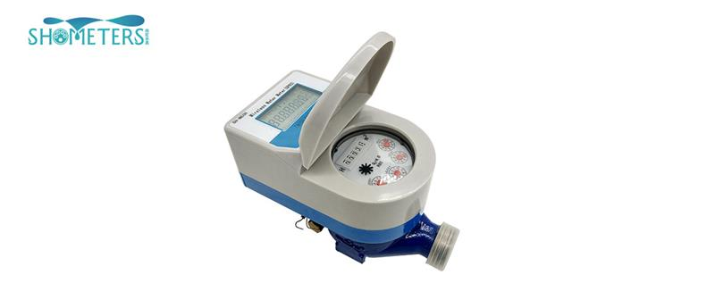

E-mail:
info@sh-meters.comCall Us:
+86 13131984716We all know that water meters are essential to measure water consumption. But water meters can not only check water consumption, they also have many functions. This requires us to understand the water meter
1. overview:
The water meter is used to measure the total amount of one-way flow through the pipeline. It can be divided into hot water meter and normal temperature water meter (generally referred to as water meter) according to its use; rotor water meter and horizontal screw wing water meter according to the measuring mechanism; wet water meter, liquid seal water meter and dry water meter according to the state of the meter head.
2. Manufacturing method:
The manufacture of water meter includes casting, cutting, assembling, calibration, inspection and packaging. Each process is closely related to the quality of the finished water meter. For example, the shape of the water meter cavity (box), the quality of the inner surface, the shape of the measuring impeller and the screw wing, the roughness, the installation and calibration of the deceleration mechanism and the indication mechanism all affect the working accuracy of the water meter.
3. purpose:
It is mainly used to measure the water consumption of factories, mines, enterprises and households.
4. species:
(1) LXS type rotor wet water meter: rotor wet water meter is applicable to the measurement of the total amount of unidirectional water flow in small-diameter pipes. For example, the household water consumption of 15mm and 20mm pipes shall be used for measurement. This kind of water meter is mainly composed of shell, impeller measuring mechanism, decelerating mechanism and indicator. It has the characteristics of simple structure.
(2) LXL type horizontal screw wing water meter: the horizontal screw wing water meter is used to measure the total flow of large flow pipeline. It is especially suitable for the demand of water supply main pipeline and large-scale mining water. The main features are large circulation capacity, small volume, compact structure, easy to use and maintain.
(3) Lxsy rotor type single flow liquid seal water meter: the purpose is the same as lxsy type. The difference in structure is that the indicator mechanism is sealed with special liquid to prevent water from entering the indicator mechanism, and the flow pressure acts on the rotor from one side of the rotor.
(4) Lxsg type rotor multi flow (magnetic transmission) dry water meter: this meter has the use of LXS type, but has its unique structure. The transmission of its impeller measuring mechanism and sealed indicator mechanism is realized by magnetic coupling. This indicator mechanism is isolated from water to avoid the wet water meter indicator mechanism being rusted and stained by water, so as to keep the indicator mechanism clear for a long time.
(5) Hot water meter: the structure of the hot water meter is the same as that of the normal temperature water meter, for example, the structure of lx-sr hot water meter is the same as that of LXS type water meter. But in order to meet the special needs of measuring hot water, all parts are made of heat-resistant materials.
